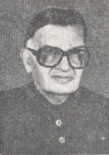

খুৰছেদ আলম খান

মূল কাৰ্যকাল:
বস্ত্ৰ মন্ত্ৰালয়, ৰাজ্যিক মন্ত্ৰী (স্বাধীন চাৰ্জ)
১৯৮৫ - ১৯৮৬
অসামৰিক বিমান পৰিবহণ আৰু পৰ্যটন মন্ত্ৰালয়, ৰাজ্যিক মন্ত্ৰী (স্বাধীন চাৰ্জ)
১৯৮৩ - ১৯৮৫
বাণিজ্য মন্ত্ৰালয়, ৰাজ্যিক মন্ত্ৰী (স্বাধীন চাৰ্জ)
১৯৮৫ - ১৯৮৬

১ম জৱাহৰলাল নেহৰু মন্ত্ৰণালয়
যোগাযোগ মন্ত্ৰালয়
উপমন্ত্ৰী
৩য় ইন্দিৰা গান্ধী মন্ত্ৰালয়
ৰাজীৱ গান্ধী মন্ত্ৰালয়
১ম জৱাহৰলাল নেহৰু মন্ত্ৰণালয়

1_Upload_2026.pdf

জৱাহৰলাল নেহৰু
o-Jawaharlal_Nehru.htmlপ্ৰধানমন্ত্ৰী
১৫ আগষ্ট ১৯৪৭ - ১৩ মে’ ১৯৫২

ৰফি আহমেদ কিডৱাই
o-Rafi_Ahmed_Kidwai.htmlকেবিনেট মন্ত্ৰী
১৫ আগষ্ট ১৯৪৭ - ১৩ মে’ ১৯৫২
খুৰছেদ আলম খান
o-Khurshed_Alam_Khan.htmlউপমন্ত্ৰী
৬ মে’ ১৯৫০ - ১৩ মে’ ১৯৫২
প্ৰাসংগিক আদেশ
1_Upload_2026.pdf[16]৬ মে’ ১৯৫০মন্ত্ৰী পৰিষদ